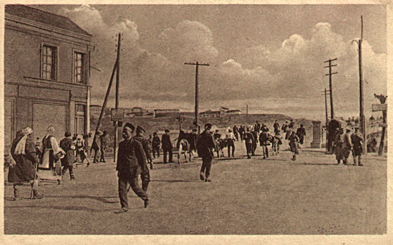
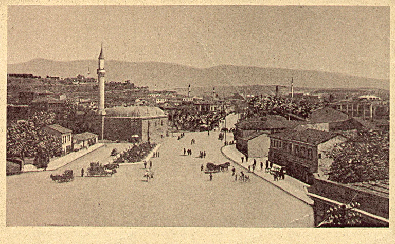
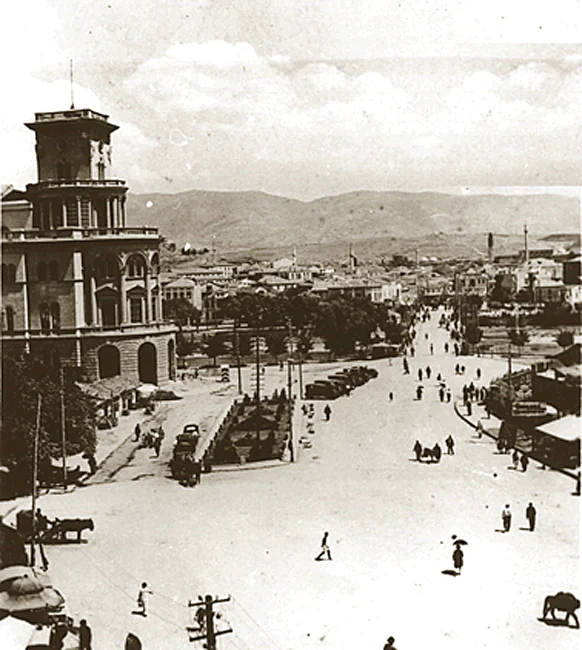

Celebración - plaza
- Guion
- Aco Petrovski y Aki Pavlovski
- Dirección
- Trajče Popov
- Operador
- Kiro Bilbilovski y Trajče Popov
- Año
- 1949
- Duración
- 00:19

La plaza de la ciudad de Skopie, fotografiada hacia mediados del siglo XIX.

Skopie a finales del siglo XIX. La plaza con la mezquita Burmali y algunos edificios alrededor. Una calle sin urbanizar. Punto de reunión de transportistas con carros de bueyes.

La plaza a finales del siglo XIX y principios del XX. En primer plano, una parada de coches de caballos y carros. A la derecha se extienden, en dos filas, los edificios situados justo ante el puente de piedra. Detrás, la mezquita Burmali. A su izquierda, viviendas y, justo detrás, parte del banco. Al fondo se alza la fortaleza de Skopie - Kale con el cuartel.

La plaza a finales del siglo XIX y principios del XX. En primer plano, una parada de coches de caballos y carros. A la derecha se extienden, en dos filas, los edificios ante el puente de piedra, con tiendas y talleres. A su izquierda, la mezquita Burmali y, junto a ella, viviendas. Al fondo se alza la fortaleza de Skopie - Kale con el cuartel.

Skopie durante las guerras balcánicas. La mezquita Burmali con una parada de coches de caballos. A su derecha, los edificios a ambos lados ante la entrada del puente de piedra, con tiendas y talleres. En primer plano se ven limpiabotas y soldados. La calle tiene canales abiertos para el agua de lluvia.

Parte de la plaza ante el puente de piedra (durante la guerra balcánica). Se ven calles sin empedrar. El edificio de la izquierda es uno de los que se alineaban en dos filas ante el puente, con tiendas y talleres. Fueron derribados hacia 1920.

Skopie, hacia 1920. Parte de la plaza ante el puente de piedra. Los primeros quioscos de servicios y venta, con una arquitectura cuidada en los detalles, es decir, en los tejados. El puente se ensanchó con ménsulas peatonales.

Skopie, hacia 1920. Una plaza urbanizada, con mobiliario urbano, una plazoleta verde cercada, superficies empedradas y aceras con bordillos. Un acceso destacado al puente de piedra con vistas despejadas al río y a la fortaleza. Animación de ciudadanos y coches de caballos como transporte público.

Skopie, hacia 1920. Una plaza urbanizada, con mobiliario urbano, una plazoleta verde cercada, superficies empedradas y aceras con bordillos. Un acceso destacado al puente de piedra con vistas despejadas al río y a la fortaleza. Animación de ciudadanos y coches de caballos como transporte público.

Skopie tras la Primera Guerra Mundial, al comenzar la urbanización de la plaza. Se han derribado los edificios situados detrás de la mezquita Burmali, ante el puente de piedra. El puente tiene una nueva barandilla en las ménsulas peatonales. Al fondo, parte del barrio de Pajko, en la margen izquierda del Vardar.

Skopie justo después de la Primera Guerra Mundial. La plaza antes de construirse el palacio Ristić. Vista de un caserío disperso de arquitectura tradicional. Recto hacia arriba, la calle principal que llevaba a la estación de entonces. A la izquierda, a media altura, la actual calle «11 de Octubre».

Skopie, años 1920. La plaza vista desde el sur con parte del palacio Ristić a la derecha. A la izquierda, el hotel «Sarajevo», el hotel «Obedinuvanje» y el café «Marger». Numerosos edificios y tiendas surgen a lo largo de la calle principal.

La plaza, años 1920. En primer plano, la parada de coches de caballos (ante el Casino de Oficiales); al fondo domina el edificio del boticario Ristić, conocido como palacio Ristić.

Skopie hacia 1930. La plaza vista desde el sur, con el palacio Ristić y el almacén de madera en primer plano. Numerosos edificios y tiendas surgen a lo largo de la calle principal.

Skopie, hacia 1930. Parte de la plaza con el palacio Ristić. A la derecha se ve la valla del almacén de madera, donde se vendían materiales de construcción.

Fotografía aérea de la plaza Makedonija. (años 1920)

Una parte de la plaza con el palacio Ristić (años 1930)

Parte de la plaza y el palacio Ristić. Abajo a la izquierda, un templete cubierto para la banda militar, que tocaba los domingos y festivos. A lo lejos a la derecha se ve el molino «Balkan». (años 1930)

Skopie hacia 1930. La plaza de la ciudad con el palacio Ristić y el almacén de madera en primer plano. Numerosos edificios y tiendas surgen a lo largo de la calle principal.

Skopie hacia 1930. La plaza vista desde el sur tras la construcción del palacio Ristić, con el almacén de madera en primer plano. Numerosos edificios y tiendas surgen a lo largo de la calle principal.

Skopie hacia 1930. Parte de la plaza vista desde el sur, tras la construcción del palacio Ristić, con el almacén de madera en primer plano y la calle principal hacia la estación con muchos edificios y tiendas.

Una parte de la plaza, con el Casino de Oficiales al fondo
- años 1920.

La plaza hacia 1927. El acceso sur al puente de piedra. Al fondo a la izquierda se ven el Teatro Nacional y la fortaleza de Skopie - Kale.

La plaza hacia 1927. El acceso sur al puente de piedra. En primer plano, el cine de verano en terraza, donde se proyectaban películas.

Skopie, hacia 1925. Parte de la plaza ante el puente de piedra. Los primeros quioscos de servicios y venta, con una arquitectura cuidada en los detalles, es decir, en los tejados. El puente se ensanchó con ménsulas peatonales. Al fondo a la izquierda, el Teatro Nacional y la fortaleza de Skopie - Kale. En primer plano se derriba el cine de verano, en cuyo lugar se construyó el Banco Nacional.

La plaza hacia 1926. Una plaza urbanizada, con mobiliario urbano, plazoleta verde cercada, superficies empedradas y aceras con bordillos. Junto a la plazoleta, una parada de coches de caballos y, al lado, un aparcamiento de automóviles y taxis. A la derecha, restaurantes y hoteles. De frente, el puente de piedra con parte de los barrios judío y de Pajko. A la izquierda de la foto, el Casino de Oficiales en obras.

La plaza, segunda mitad de los años 1920. Una plaza urbanizada, con mobiliario urbano, plazoleta verde cercada, superficies empedradas y aceras con bordillos. Junto a la plazoleta había una parada de coches de caballos. A la derecha, restaurantes y hoteles. A la izquierda, el Casino de Oficiales, todavía en obras. Al fondo, el puente de piedra con parte de los barrios judío y de Pajko.

La plaza de la ciudad de Skopie - años 1920. Ante el Casino de Oficiales había una parada de taxis. Pero los coches de caballos siguen siendo un medio de transporte de los ciudadanos.

La plaza entera - finales de los años 1920. Ante el Casino de Oficiales había una parada de taxis. Pero los coches de caballos siguen siendo un transporte público de los ciudadanos.

La plaza con el hotel «Sarajevo» y el popular café «Marger», lugar favorito de los vecinos de Skopie. A la izquierda del hotel «Sarajevo» estaba el hotel «Obedinuvanje». En primer plano, en la acera, un vendedor de rosquillas. (hacia 1935)

La plaza con el hotel «Sarajevo» y el popular café «Marger», que era el lugar favorito de los vecinos de Skopie. A la izquierda del hotel «Sarajevo» estaba el hotel «Obedinuvanje». A la izquierda se ve el acceso sur al puente de piedra - años 1920.

La plaza con el Banco Nacional, la Cámara de Comercio en construcción y parte del barrio de Pajko con el Banco Otomano. Ante la Cámara, los hoteles y el café «Marger» (antes de su derribo). (años 1930)

Parte de la plaza con los monumentos situados en la entrada sur del puente de piedra. - años 1930

Parte de la plaza hacia el puente de piedra. A la entrada del puente, sobre dos altos pedestales de mármol, se colocaron dos estatuas ecuestres (obra del escultor Antun Augustinčić). En la plaza se construyó también una fuente. A la izquierda se ven el Teatro Nacional, la fortaleza de Skopie - Kale y parte del barrio judío. (hacia 1930)

Parte de la plaza con el Banco Nacional y la Cámara de Comercio. (años 1930)

La plaza de la ciudad de Skopie, años 1950, con la antigua oficina de correos al fondo y, a la izquierda, el Museo de Historia Natural.

La plaza, años 1950. El primer edificio de la izquierda es el conocido como «Macura», que albergaba la farmacia central y otras tiendas. Al fondo, el Casino de Oficiales, el Banco Nacional y el puente de piedra. En primer plano, donde estaba el almacén de madera, un parque bien cuidado.

La plaza de la ciudad de Skopie, años 1950, con el hotel «Makedonija» a la izquierda.

La plaza en los años 1950.

La plaza en los años 1950.

Parte de la plaza con el Casino de Oficiales y, al fondo, el Teatro Nacional y la fortaleza de Skopie - Kale. (años 1950)

Parte de la plaza hacia el puente de piedra. A la izquierda, el Casino de Oficiales; a la derecha, el Banco Nacional y la Cámara de Comercio. Autobuses urbanos (de un piso y de dos pisos) con cabecera y final de línea en la plaza. (años 1950)

La plaza de la ciudad de Skopie hacia 1950. A la izquierda, el Casino de Oficiales; a la derecha, el Banco Nacional con la Cámara de Comercio. Entre ellos, el puente de piedra y, al otro lado, los edificios de los bancos e Ibni Pajko.

La plaza - años 1950

La plaza, años 1970. Vista hacia el puente de piedra, el edificio «Ibni Pajko» y el complejo bancario. En esos años la plaza se usaba como aparcamiento.

Parte de la plaza, años 1970, con el palacio Ristić y los edificios de la calle «Goce Delčev».

 Acueducto4 postales
Acueducto4 postales Kale30 postales
Kale30 postales Puentes60 postales
Puentes60 postales Malecón58 postales
Malecón58 postales Plaza46 postales
Plaza46 postales Edificios66 postales
Edificios66 postales Templos cristianos19 postales
Templos cristianos19 postales Edificios musulmanes33 postales
Edificios musulmanes33 postales Casino de Oficiales29 postales
Casino de Oficiales29 postales Teatro28 postales
Teatro28 postales Estación de ferrocarril13 postales
Estación de ferrocarril13 postales Escuelas36 postales
Escuelas36 postales Parques12 postales
Parques12 postales Mercados18 postales
Mercados18 postales Calles38 postales
Calles38 postales Panorama I60 postales
Panorama I60 postales Panorama II30 postales
Panorama II30 postales Collages55 postales
Collages55 postales Inundaciones9 postales
Inundaciones9 postales Terremoto27 postales
Terremoto27 postales Skopie 200026 postales
Skopie 200026 postales